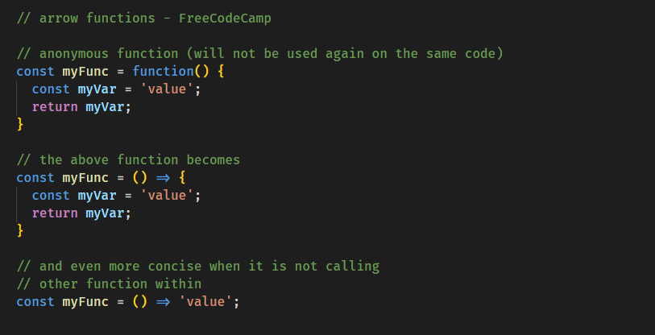
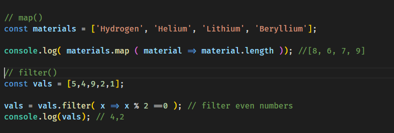
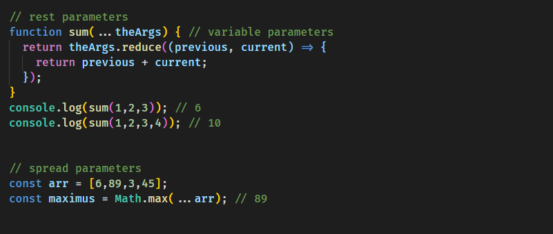
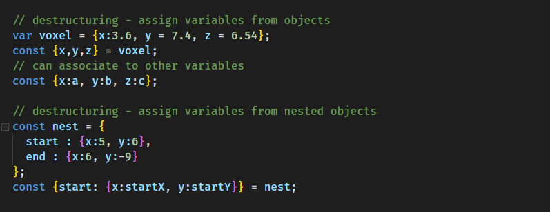

Today I followed the FreeCodeCamp.org lessons for ES6 especification to learn about Arrow Functions, Methods, Rest and Spread, and Destructuring.
Starting with Arrow Functions to write shorter anonymous Functions. It's hard to grasp its concepts as it is not as clear.

The next lessons were about Higher Order Arrow Functions, that use arrow methods, like map(), filter(), reduce(), etc. I had to watch some Youtube videos to understand it better and read documentation at Mozilla web docs.
The first video by the channel The Coding Train was more generic. I next watched the video about the map() and fill() and another one only about filter() on the same channel.
map() creates an array based on the result of calling a function for every element of other array.
filter() creates another array based on the parameters to filter the items.

The following lessons were of Rest and Spread parameters. Both can be used to copy items from a variable array in length. Which means, you don't need to hard code the amount of items.

They can be used to Destructuring functions.

I watched two excellent Youtube videos about them on the freeCodeCamp channel. The lessons were given by Beau. Video on Rest and Spread operators and one about Destructuring.